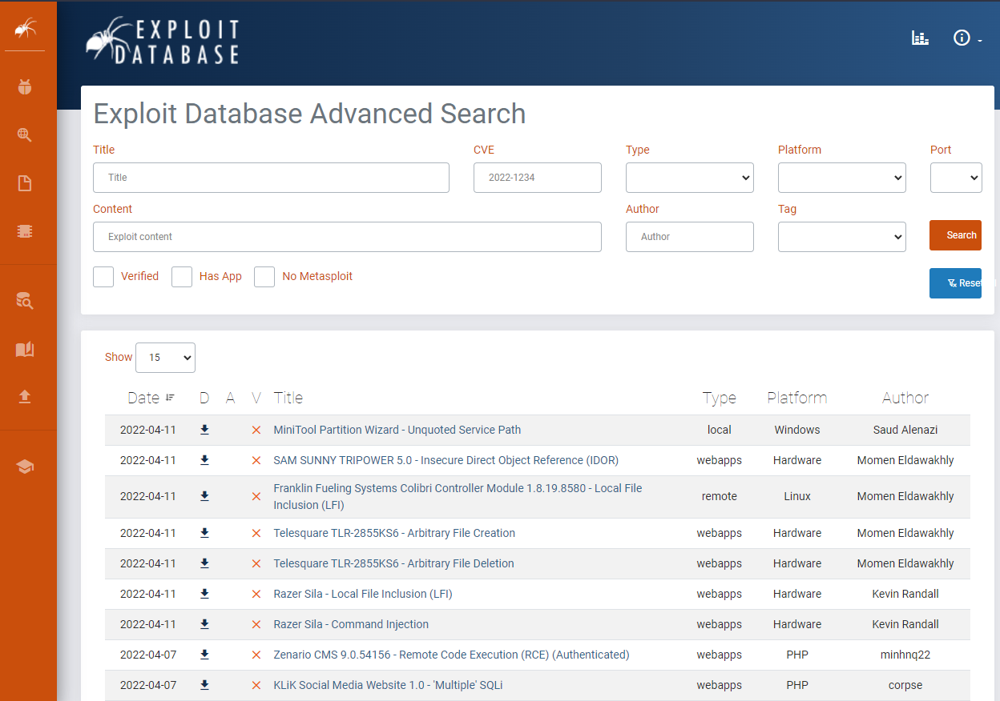
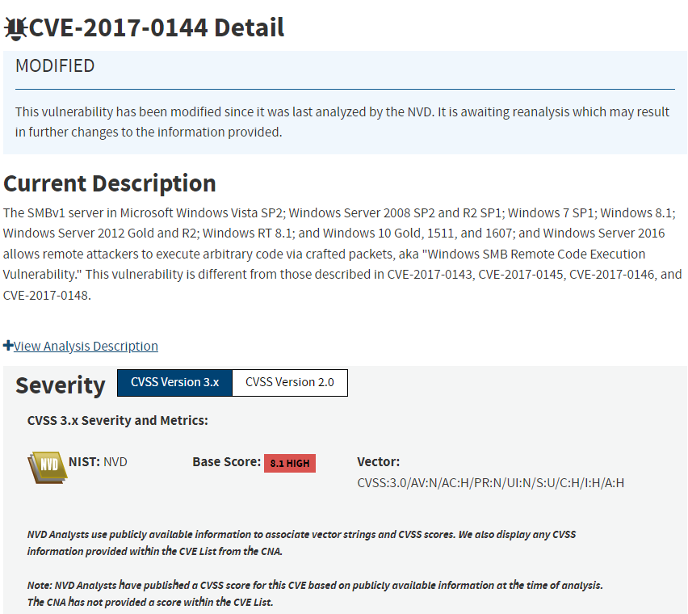
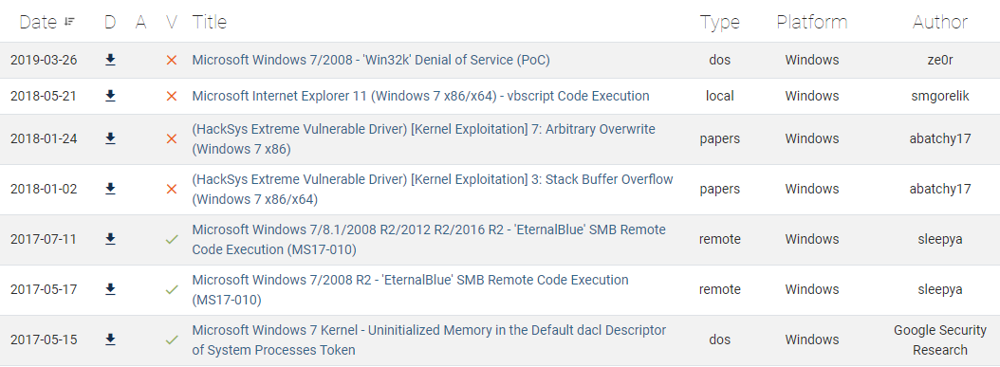
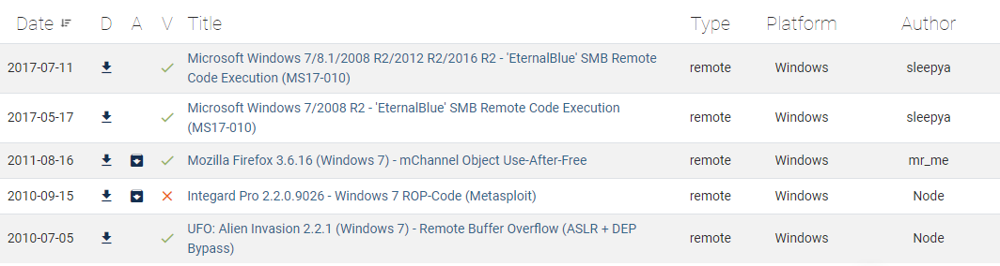
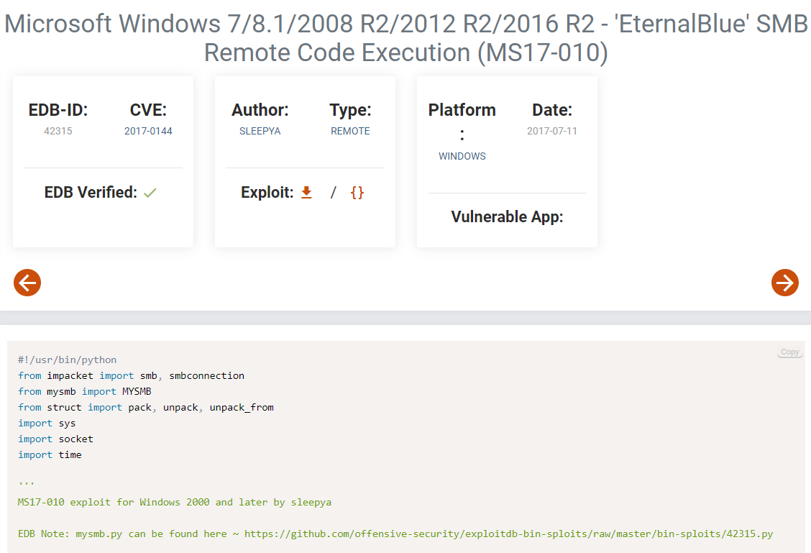
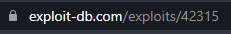

ExploitDB
Here is the URL to ExploitDB: https://www.exploit-db.com/
Table of contents
What is ExploitDB
Table of contents
ExploitDB (also known as exploit database) put simply is a very large database of exploits. When a vulnerability is
found, people will make programs to exploit those vulnerabilities. Once the exploitation program is created, they
may then proceed to upload the program onto the internet.
ExploitDB is one of those hubs holding a collection of
exploits (users are able to upload their own exploitation programs to ExploitDB). The database on ExploitDB
contains exploits dating all the way back to 1988 (with some papers extending to 1984), showing you the size of
exploits available on the site (and how long vulnerabilities have been around for).
The ExploitDB site itself is well made and easy to use. The intended use of ExploitDB is to use the search feature
to look for specific vulnerabilities you have found.
Once you find an appropriate exploit for the accompanying
vulnerability, you can then download and execute it for exploitation. You can use the search feature to find the
exploits, however commonly I type it into Google and find the ExploitDB page myself.
Many other tools also use the exploit database available on ExploitDB, Nmap ‘vulscan’ for example gives users a
list of potential exploits reflecting on the scan result, with the exploits coming from multiple databases (with
ExploitDB being one of them).
ExploitDB Search Feature
To Contents Table
The main fields you will most likely use will be title, platform and type. If you have the CVE available I also recommend using it, as its basically a vulnerability ID. It also has checkmarks.
- Verified – tells you if the exploit has been verified to be working by EDB themselves
- Has application – the exploit works against a specific vulnerable application
- No Metasploit – if the exploit is not on Metasploit tool
What is a CVE?
CVE stands for ‘common vulnerabilities and exposures’. It is basically a identification code given to each
vulnerability found. For example, the EternalBlue CVE is 2017-0144. The CVE is in the format of Year discovered
– ID_Number.
Trying looking the EternalBlue CVE up on Google! In the NIST CVE database, details about the CVE vulnerability can
be found, the details being the vulnerability description and severity.

Using the Search Feature
To Contents Table
First, depending on the information you have collected on the service you are looking for a exploit for, you
would enter what you know about the service (like its version) the into the fields. In this example I’m going
to look for the remote exploit for a Windows machine (EternalBlue exploit).
From the information I have gathered, I know the target is a Windows 7 machine. In the title I enter ‘windows
7’ (if you’re looking at apache vulnerabilities, you would enter apache version_x), with the platform as ‘Windows’.
This is the response received:

I then decide I want to try out a remote exploit, so I entered ‘remote’ into type.

And now the EternalBlue exploit, the exploit I’m looking for, can be found at the top of the list.
ExploitDB Page analysis
To Contents Table
In this example I will be looking at the EternalBlue exploit
(can be found here on ExploitDB )

- EBD-ID – this is the unique ID by EDB given to the exploit page
 - CVE – the Common Vulnerability and exposure code – in this case its 2017-0144 to reflect its for the vulnerability ‘EternalBlue’
- EBD verified – confirmation from EDB themselves whether or not the code actually works – in this exploit EDB has confirmed it works
- Type – what type of exploit is it (for example, DOS, remote, local exploit) – in this case it’s type is ‘remote’ (meaning it can be remotely executed)
- Platform – what platform the exploit works on – in this case, it works against Windows machines (and in the title, the Windows versions has been specified)
- Date – the date of when the exploit was uploaded
- Vulnerable application – if relevant, what vulnerable application the exploit works against – in this case nothing has been specified as the target is a range of Windows OS.
- Code at the bottom – the code at the bottom is actually the exploit code itself. In this case, this is the code of the EternalBlue exploit. Regardless of what exploit you are using, you should ALWAYS read the code. It may contain instructions, or have some issues or malicious lines of code (this is why having an understanding of programming is important in penetration testing!).
Overall
To Contents TableExploitDB is a treasure trove of exploits, 9 out of 10 times, if you are looking for an exploit it is highly likely you will find and download it from ExploitDB. Many other tools also integrate the ExploitDB database into its usage. An example of a tool is a Nmap script called ‘Vulscan’, which outputs relevant exploits based off the scan results (coming from a range of databases, ExploitDB included). Some exploits have also started to popup on GitHub, however unless it is being regularly updated I believe it should be the same as its ExploitDB counterpart.